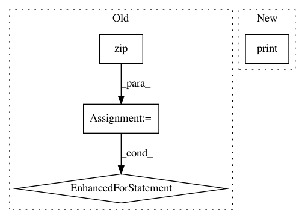

42efaa53edce9b84a98fef1fce24502e6d2ba941,examples/transformer.py,,,#,11
Before Change
targettxt = [ " ".join([text_database.target_vocab._id_to_token_map_py[i] for i in line]) \
for line in target.tolist()]
writer.add_summary(mgd, global_step=step)
for index, line in enumerate(zip(source, sourcetxt, target, targettxt)):
print("{}:{} source:{} txt:{}".format((step-1)*32+index, step, line[0], line[1]))
print("{}:{} target:{} txt:{}".format((step-1)*32+index, step, line[2], line[3]))
for var in tf.trainable_variables():
print("name:{}\tshape:{}\ttype:{}".format(var.name, var.shape, var.dtype))
if step % 1000 == 0:
saver.save(sess, "./logdir/my-model", global_step = step)
After Change
// print("{}:{} source:{} txt:{}".format((step-1)*32+index, step, line[0], line[1]))
// print("{}:{} target:{} txt:{}".format((step-1)*32+index, step, line[2], line[3]))
// print("{}:{} predict:{} txt:{}".format((step-1)*32+index, step, line[4], line[5]))
print("var cnt:{}".format(len(tf.trainable_variables())))
for var in tf.trainable_variables():
print("name:{}\tshape:{}\ttype:{}".format(var.name, var.shape, var.dtype))
exit()
if step % 1000 == 0:
In pattern: SUPERPATTERN
Frequency: 3
Non-data size: 4
Instances
Project Name: asyml/texar
Commit Name: 42efaa53edce9b84a98fef1fce24502e6d2ba941
Time: 2017-12-08
Author: shore@pku.edu.cn
File Name: examples/transformer.py
Class Name:
Method Name:
Project Name: Hironsan/anago
Commit Name: b1ec0299de53bdc03870c39b00a1c88ff35cf0ea
Time: 2018-06-01
Author: hiroki.nakayama.py@gmail.com
File Name: anago/callbacks.py
Class Name: F1score
Method Name: on_epoch_end
Project Name: AlexEMG/DeepLabCut
Commit Name: 4ae9541144d2d3b03675587e16cce820c4fc1942
Time: 2021-01-22
Author: alexander@deeplabcut.org
File Name: deeplabcut/pose_estimation_tensorflow/predict_multianimal.py
Class Name:
Method Name: GetPoseandCostsF